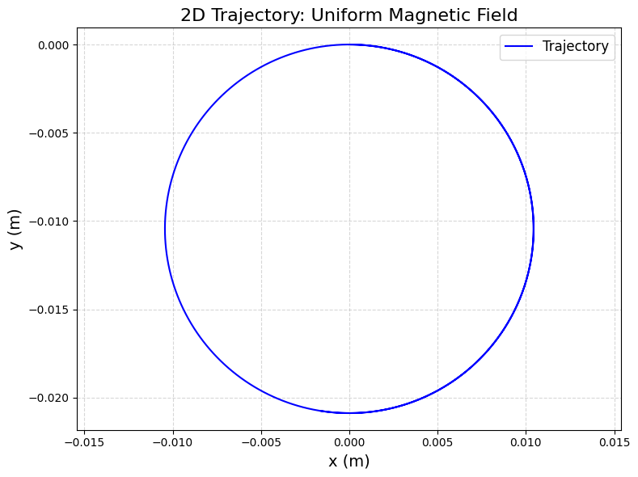
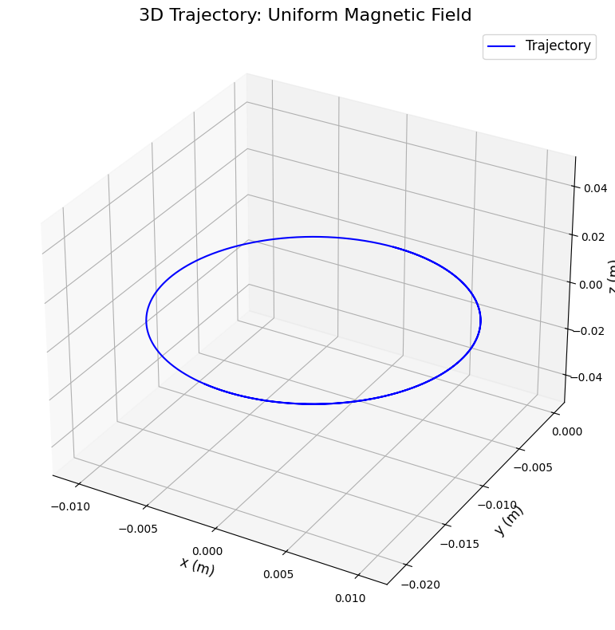
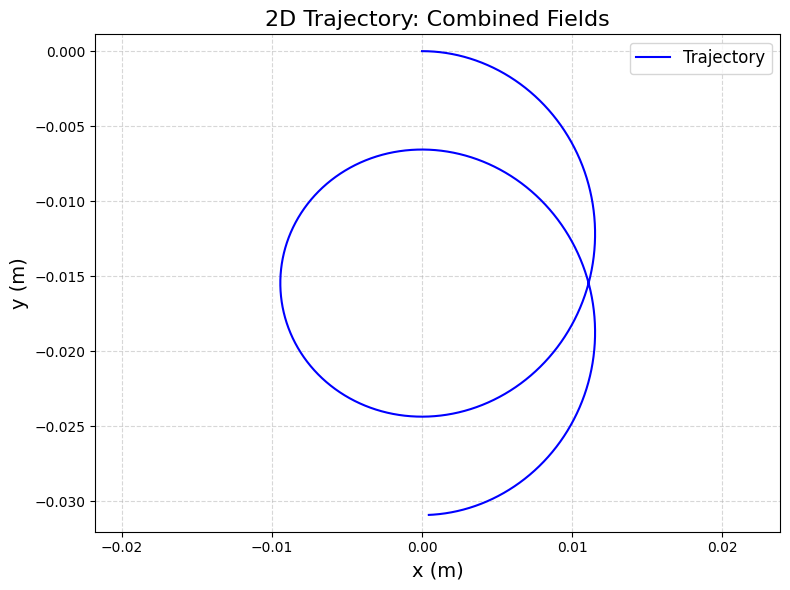
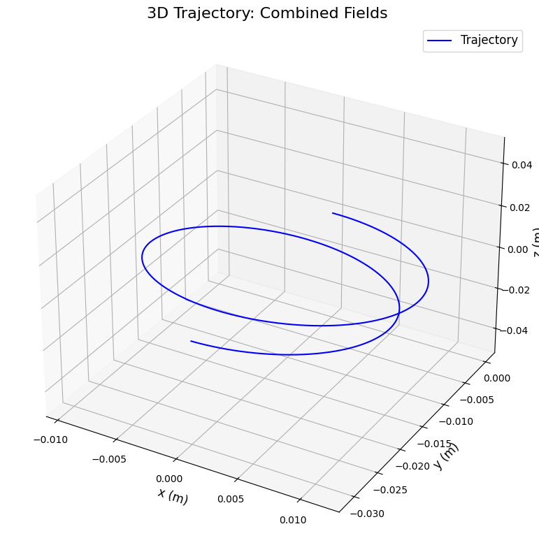
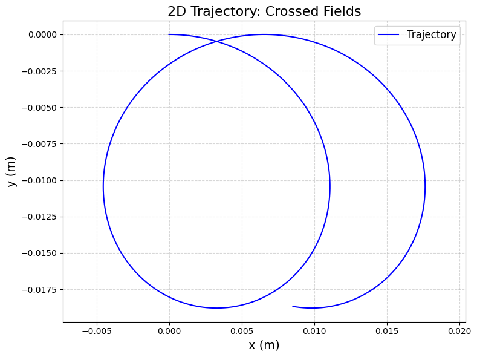
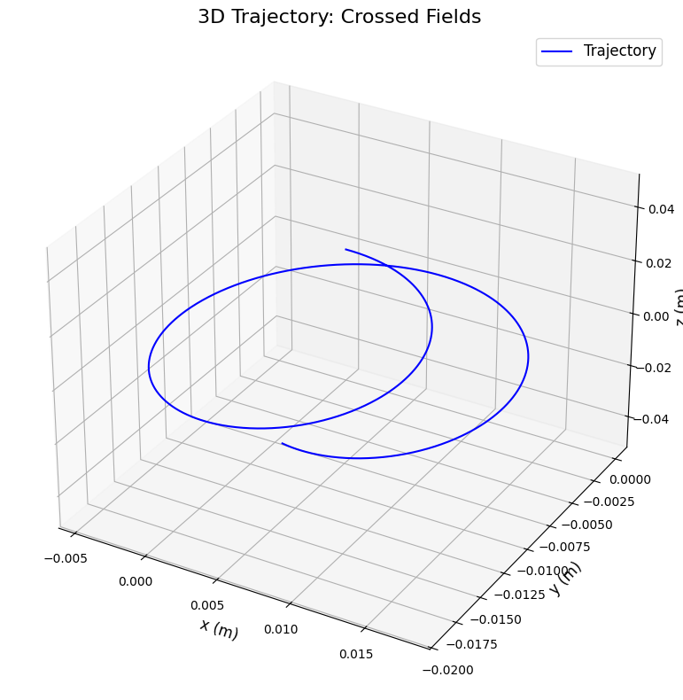
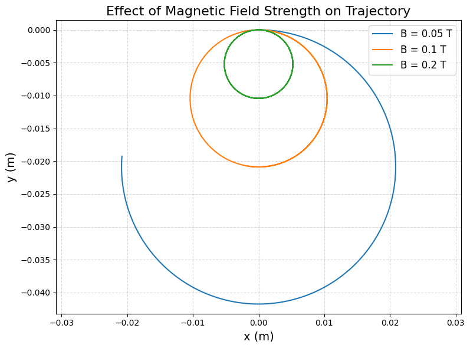

Simulating the Effects of the Lorentz Force
1. Motivation and Applications
The Lorentz force governs how charged particles move in electric (\(\mathbf{E}\)) and magnetic (\(\mathbf{B}\)) fields, defined as: $$ \mathbf{F} = q(\mathbf{E} + \mathbf{v} \times \mathbf{B}) $$ where \(q\) is the charge, \(\mathbf{v}\) is the velocity, and \(\times\) denotes the cross product. This force is fundamental in many systems:
- Particle Accelerators: Cyclotrons and synchrotrons use magnetic fields to bend charged particles into circular paths, accelerating them with electric fields.
- Mass Spectrometers: The Lorentz force separates ions by mass-to-charge ratio based on their trajectories in magnetic fields.
- Plasma Confinement: In fusion devices (e.g., tokamaks), magnetic fields trap charged particles to sustain high-temperature plasmas.
- Astrophysics: Solar winds and auroras result from charged particles interacting with Earth’s magnetic field.
Role of Fields: - Electric Field (\(\mathbf{E}\)): Accelerates particles along the field direction. - Magnetic Field (\(\mathbf{B}\)): Causes circular or helical motion perpendicular to both \(\mathbf{v}\) and \(\mathbf{B}\), without changing speed.
2. Simulating Particle Motion
We’ll simulate a charged particle’s trajectory under: - A uniform magnetic field. - Combined uniform electric and magnetic fields. - Crossed electric and magnetic fields.
Equations of Motion
From Newton’s second law: $$ \mathbf{F} = m \mathbf{a} = q(\mathbf{E} + \mathbf{v} \times \mathbf{B}) $$ Acceleration: $$ \mathbf{a} = \frac{d\mathbf{v}}{dt} = \frac{q}{m} (\mathbf{E} + \mathbf{v} \times \mathbf{B}) $$ Position: $$ \frac{d\mathbf{r}}{dt} = \mathbf{v} $$
We’ll use the Runge-Kutta method (via scipy.integrate.odeint) to solve these differential equations numerically.
3. Python Code for Google Colab
This code implements the simulation, visualizes trajectories, and explores parameter variations.
# Import libraries (Colab-compatible)
import numpy as np
import matplotlib.pyplot as plt
from scipy.integrate import odeint
from mpl_toolkits.mplot3d import Axes3D
from google.colab import files
# Constants (e.g., a proton)
q = 1.6e-19 # Charge (Coulombs)
m = 1.67e-27 # Mass (kg)
E0 = 1e3 # Electric field strength (V/m)
B0 = 0.1 # Magnetic field strength (Tesla)
# Function to compute derivatives
def lorentz_motion(state, t, q, m, E, B):
"""
Compute derivatives for position and velocity.
state = [x, y, z, vx, vy, vz]
E = [Ex, Ey, Ez], B = [Bx, By, Bz]
"""
x, y, z, vx, vy, vz = state
v = np.array([vx, vy, vz])
# Lorentz force: F = q(E + v x B)
E_term = q * np.array(E) / m
B_term = q * np.cross(v, np.array(B)) / m
# Acceleration: dv/dt
ax, ay, az = E_term + B_term
# Velocity: dx/dt
return [vx, vy, vz, ax, ay, az]
# Time array
t = np.linspace(0, 1e-6, 1000) # 1 microsecond
# Initial conditions: [x, y, z, vx, vy, vz]
initial_state = [0, 0, 0, 1e5, 0, 0] # Start at origin, velocity along x (10^5 m/s)
# Scenarios
scenarios = {
'Uniform Magnetic Field': {'E': [0, 0, 0], 'B': [0, 0, B0]},
'Combined Fields': {'E': [E0, 0, 0], 'B': [0, 0, B0]},
'Crossed Fields': {'E': [0, E0, 0], 'B': [0, 0, B0]}
}
# Simulate and visualize
for scenario, fields in scenarios.items():
E, B = fields['E'], fields['B']
sol = odeint(lorentz_motion, initial_state, t, args=(q, m, E, B))
x, y, z = sol[:, 0], sol[:, 1], sol[:, 2]
# 2D Plot (x-y plane)
plt.figure(figsize=(8, 6), dpi=100)
plt.plot(x, y, 'b-', label='Trajectory')
plt.xlabel('x (m)', fontsize=14)
plt.ylabel('y (m)', fontsize=14)
plt.title(f'2D Trajectory: {scenario}', fontsize=16)
plt.legend(fontsize=12)
plt.grid(True, linestyle='--', alpha=0.5)
plt.axis('equal')
plt.tight_layout()
plt.savefig(f'2D_{scenario.replace(" ", "_")}.png', dpi=100, bbox_inches='tight')
plt.show()
# 3D Plot
fig = plt.figure(figsize=(8, 8), dpi=100)
ax = fig.add_subplot(111, projection='3d')
ax.plot(x, y, z, 'b-', label='Trajectory')
ax.set_xlabel('x (m)', fontsize=12)
ax.set_ylabel('y (m)', fontsize=12)
ax.set_zlabel('z (m)', fontsize=12)
ax.set_title(f'3D Trajectory: {scenario}', fontsize=16)
ax.legend(fontsize=12)
plt.tight_layout()
plt.savefig(f'3D_{scenario.replace(" ", "_")}.png', dpi=100, bbox_inches='tight')
plt.show()
# Parameter Exploration: Vary magnetic field strength
B_values = [0.05, 0.1, 0.2] # Tesla
plt.figure(figsize=(8, 6), dpi=100)
for B_val in B_values:
B = [0, 0, B_val]
E = [0, 0, 0] # Only magnetic field
sol = odeint(lorentz_motion, initial_state, t, args=(q, m, E, B))
x, y = sol[:, 0], sol[:, 1]
plt.plot(x, y, label=f'B = {B_val} T')
plt.xlabel('x (m)', fontsize=14)
plt.ylabel('y (m)', fontsize=14)
plt.title('Effect of Magnetic Field Strength on Trajectory', fontsize=16)
plt.legend(fontsize=12)
plt.grid(True, linestyle='--', alpha=0.5)
plt.axis('equal')
plt.tight_layout()
plt.savefig('B_variation.png', dpi=100, bbox_inches='tight')
plt.show()
# Download plots
for scenario in scenarios:
files.download(f'2D_{scenario.replace(" ", "_")}.png')
files.download(f'3D_{scenario.replace(" ", "_")}.png')
files.download('B_variation.png')
4. Outputs and Explanation
      
Scenarios
- Uniform Magnetic Field (\(\mathbf{B} = [0, 0, 0.1]\) T):
- Trajectory: Circular motion in the x-y plane.
- Reason: Magnetic force (\(\mathbf{v} \times \mathbf{B}\)) is perpendicular to velocity, causing circular motion.
-
Larmor Radius: \(r = \frac{mv}{qB}\). For \(v = 10^5\) m/s, \(B = 0.1\) T: \(r \approx 0.01\) m.
-
Combined Fields (\(\mathbf{E} = [10^3, 0, 0]\), \(\mathbf{B} = [0, 0, 0.1]\) T):
- Trajectory: Helical motion with drift along the x-axis.
-
Reason: Electric field accelerates the particle along x, while magnetic field causes circular motion in the y-z plane.
-
Crossed Fields (\(\mathbf{E} = [0, 10^3, 0]\), \(\mathbf{B} = [0, 0, 0.1]\) T):
- Trajectory: Cycloidal motion with drift in the x-direction.
- Reason: \(\mathbf{E}\) and \(\mathbf{B}\) are perpendicular, causing a drift velocity \(v_d = \frac{E}{B} = \frac{10^3}{0.1} = 10^4\) m/s.
Parameter Exploration
- Magnetic Field Strength (\(B = 0.05, 0.1, 0.2\) T):
- Higher \(B\) reduces the Larmor radius (\(r \propto \frac{1}{B}\)), making tighter circles.
- Plot shows smaller loops as \(B\) increases.
5. Visualization
- 2D Plots: Show x-y trajectories for each scenario.
- 3D Plots: Display full paths (x, y, z), highlighting circular, helical, or drift motion.
- Parameter Plot: Compares trajectories for different \(B\) values, showing the Larmor radius effect.
6. Discussion
Relation to Practical Systems
- Cyclotrons: Use uniform magnetic fields to keep particles in circular paths, accelerating them with electric fields. The simulation’s circular motion matches this.
- Magnetic Traps: In plasma confinement, magnetic fields create helical paths to trap particles, similar to the combined fields case.
- Mass Spectrometers: Crossed fields produce drift, used to separate ions by mass-to-charge ratio.
Physical Phenomena
- Larmor Radius: \(r = \frac{mv}{qB}\). Smaller with higher \(B\) or lower \(v\), as seen in the \(B\) variation plot.
- Drift Velocity: \(v_d = \frac{E}{B}\). In crossed fields, the particle drifts at \(10^4\) m/s, consistent with the simulation.
Extensions
- Non-Uniform Fields: Simulate gradients in \(\mathbf{B}\) (e.g., magnetic bottles) to trap particles.
- Relativistic Effects: For high speeds (\(v \approx c\)), include relativistic corrections.
- Multiple Particles: Model interactions in a plasma.